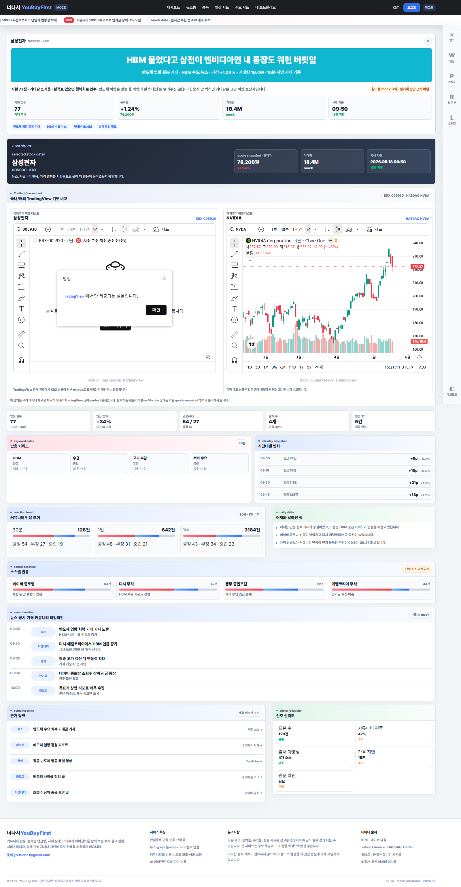
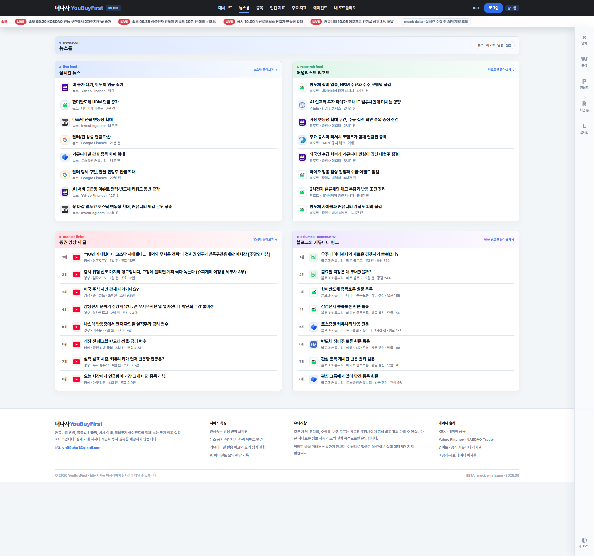

2026-05-19

종목 상세에 국내/해외 TradingView 공개 위젯을 나란히 넣고, KRX 삼성전자와 NASDAQ NVDA가 실제로 어떻게 뜨는지 확인한 기록입니다.
front/public/visual-history/2026-05-19/
날짜별로 프론트 화면 캡처를 모아 보는 작은 로컬 갤러리입니다.
루트 페이지에는 날짜 카드만 두고, 실제 버전별 화면과 탭별 이미지는 날짜별 페이지에서 확인합니다.

종목 상세에 국내/해외 TradingView 공개 위젯을 나란히 넣고, KRX 삼성전자와 NASDAQ NVDA가 실제로 어떻게 뜨는지 확인한 기록입니다.
front/public/visual-history/2026-05-19/

대시보드, 뉴스룸, 오른쪽 rail, 탭 보강 화면을 계속 비교 캡처로 보존한 날짜입니다.
front/public/visual-history/2026-05-18/
검색 필드, 종목 반응, 속보 티커, 외부 링크 카드 등을 조정하던 날짜입니다.
front/public/visual-history/2026-05-17/